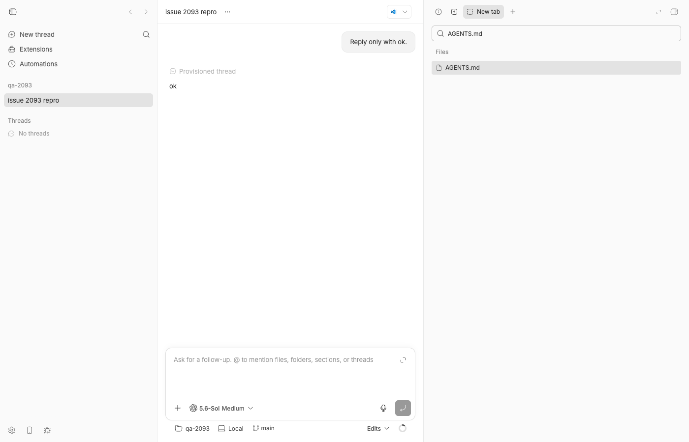
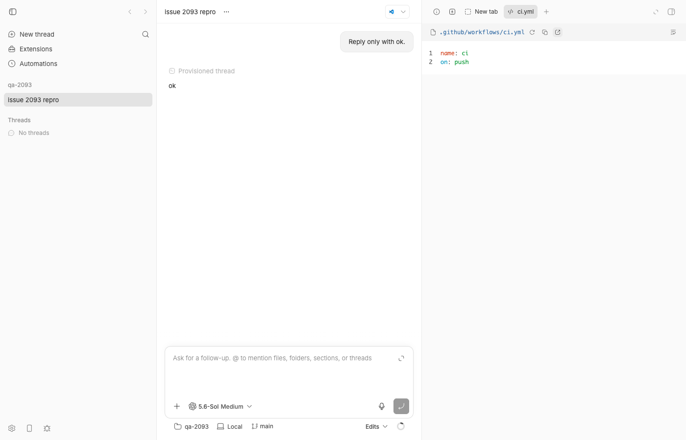
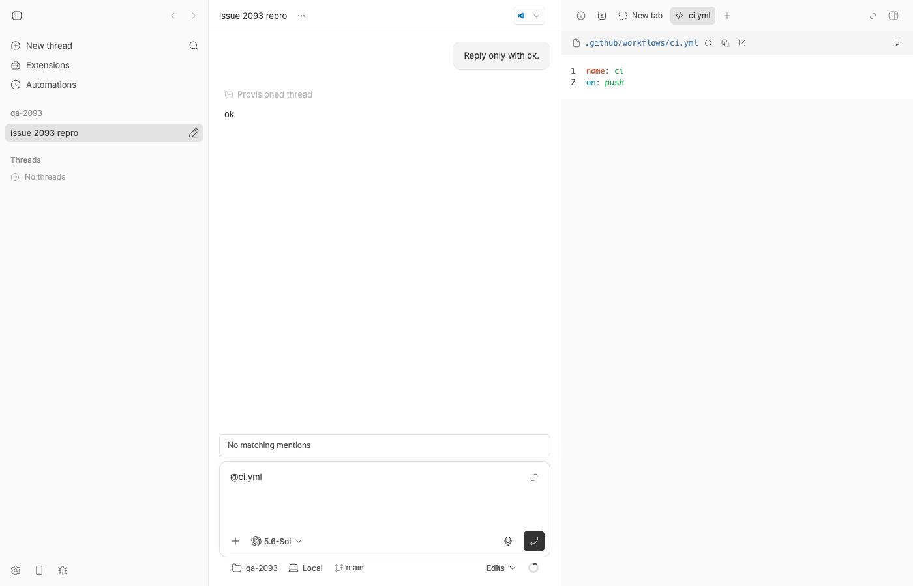

#2093 · Path listing hides every dotfile and node_modules unconditionally, so file search cannot find .github/workflows/ci.yml
Verdict: REPRODUCED · Root-cause confidence: high
Linked PRs: #2103 — REQUEST CHANGES (fixes the named symptom, but measured 80-150x slower searches and wrong top results in any repo with a .venv/.turbo/.cache); #2127 — REQUEST CHANGES (Monaco builtin; does not claim to fix #2093, it only documents it as a known gap).
1. TL;DR
Quick-open (the right panel's "Search files" box) and @-mentions in the composer cannot find .github/workflows/ci.yml, .env, or anything under .claude/, .bb/, .vscode/, while the very same file opens fine when addressed directly (bb thread open <id> .github/workflows/ci.yml, or the POST /api/v1/files/read API). The search shows "No results match your search" or, in a bigger repo, unrelated fuzzy matches, so it reads as "this file does not exist".
The cause is three unconditional continues in the host daemon's recursive walker listPathsRecursively (apps/host-daemon/src/command-handlers/file-list.ts:143-145): every entry whose name starts with ., every node_modules, and every symlink is skipped. The walker serves both host.list_paths and host.list_files, and no command parameter can relax it, so every server route built on them (environment/project/thread-storage path search, files.listPaths) and therefore every UI and plugin inherits the rule. The rule has been there since the first commit of the host file listing (c2733ab86, 2026-03-30); it is not derived from gitignore.
The issue's diagnosis is correct in every detail. The obvious "just narrow the rule to .git" fix (which is what PR #2103 does) has a hidden cost that this report measures: the walker has no cap and runs in full on every keystroke, and in real repos the dot-directories (.venv, .turbo, .next, .cache) hold 10-180x more files than the project itself. A search for config in a Python repo went from 6-8 ms to 630-1234 ms per keystroke and the project's own config.py dropped out of the top 8, displaced by .venv/lib/python3.12/site-packages/....
2. Claims vs findings
| Claim from the issue | Status | Evidence |
|---|---|---|
host.list_paths skips any name starting with ., plus node_modules and symlinks, with no way to opt in | Verified | file-list.ts#L143-L145; command schema has only path/query/limit/includeFiles/includeDirectories (commands.ts#L644-L655). Repro test fails on base (section 4). |
Quick-open in the secondary panel cannot find ci.yml | Verified | Screenshot assets/2093-file-search-ci-yml-empty.png: "No results match your search." Control AGENTS.md works. |
GET /environments/:id/paths?query=ci.yml returns nothing; AGENTS.md works | Verified | {"paths":[],"truncated":false} vs one hit for AGENTS.md (section 4 step 4). Issue's "4 unrelated fuzzy matches" is a property of the bb monorepo; my minimal repo has no other fuzzy match, so it shows zero results. |
host.read_file serves the same file | Verified | POST /files/read returns the content (18 bytes, sha256 b8ae3686...), and bb thread open renders it in the panel (assets/2093-file-opens-via-thread-open.png). |
| Rule is hardcoded, not gitignore | Verified | Nothing in apps/host-daemon/src/command-handlers/file-list.ts or host-files.ts reads an ignore file; .github/workflows/ci.yml is committed in my repo and still hidden. |
browseHostDirectory applies the same two name rules (follows symlinks) | Verified | host-files.ts#L153-L154. |
Consumers: environments.paths, projects.paths, files.listPaths | Verified, incomplete | Also: threads/data.ts storage files/paths (L601, L657), files.list (L273), and two host.list_files consumers that depend on the dot-hiding: workspace-skills.ts:82 and skill-listing.ts:416 (see PR #2103 review). |
| Not the fuzzy ranker | Verified | Unqueried listing (?limit=10, no query) returns only AGENTS.md, src, src/index.ts; the walker never emits the dot paths. |
| Not a duplicate | Verified | No other open/closed issue about listPathsRecursively dot handling as of 2026-08-21. |
Found at 6be45053b and bb 0.38.0 desktop | Unverified | I did not test 0.38.0, but the code is unchanged from the first commit (c2733ab86) through fcada5a3b and origin/main (15f21ade7), so every released build has it. |
3. Environment
- bb source at
fcada5a3b88302acb9944aa74b11db4ecaa215a0(main, 2026-08-21);origin/mainat15f21ade7has no change to the walker (git log fcada5a3b..origin/main -- apps/host-daemon/src/command-handlers/is empty), so the bug is still present on main. - macOS 26.5.2 (Darwin 25.5.0 arm64), Node v22.23.1, pnpm 9.15.0, codex-cli 0.149.0 (used once for the UI repro; "Reply only with ok.").
- Isolated dev instance from
scripts/bb-dev-app current: Apphttp://localhost:14828, Serverhttp://localhost:22828, Host daemonhttp://127.0.0.1:30828, data dir~/.bb-dev/bb-machines-bee.getbb.app-checkouts-bb-.claude-worktrees-wf_21e66a79-f02-7-1fe6323429e2(deleted at cleanup). Host idhost_exgcwk6i66, projectproj_2f67zacebv, threadthr_yiaj6f4f4n, environmentenv_jcrqkidpgd. - Browser: headless Chrome via
doobie, 1400x900.
4. Minimal reproduction
4a. Unit level (no running app; fails on base)
- Save 2093/repro/file-list.issue-2093.test.ts as
apps/host-daemon/src/command-handlers/file-list.issue-2093.test.ts. - Run it from
apps/host-daemon:pnpm exec vitest run src/command-handlers/file-list.issue-2093.test.ts
- Actual on
fcada5a3b(full log):× walker: .github/workflows/ci.yml is walked (FAILS on fcada5a3b) AssertionError: expected [ 'AGENTS.md' ] to include '.github/workflows/ci.yml' × host.list_paths query=ci.yml returns nothing while host.read_file serves the same file (FAILS on fcada5a3b) AssertionError: expected [] to deeply equal [ '.github/workflows/ci.yml' ] ✓ documents what the walker should still hide (.git, node_modules) Tests 2 failed | 1 passed (3)
Expected: all three pass. The second test is the whole bug in one place:readHostFilereturns"name: ci\n"for the path thatlistHostPathsclaims does not exist.
// apps/host-daemon/src/command-handlers/file-list.issue-2093.test.ts
import fs from "node:fs/promises";
import os from "node:os";
import path from "node:path";
import { afterEach, beforeEach, describe, expect, it } from "vitest";
import { listPathsRecursively } from "./file-list.js";
import { listHostPaths, readHostFile } from "./host-files.js";
let root: string;
beforeEach(async () => {
root = await fs.mkdtemp(path.join(os.tmpdir(), "bb-issue-2093-"));
await fs.mkdir(path.join(root, ".github", "workflows"), { recursive: true });
await fs.writeFile(path.join(root, ".github", "workflows", "ci.yml"), "name: ci\n");
await fs.mkdir(path.join(root, ".git"), { recursive: true });
await fs.writeFile(path.join(root, ".git", "config"), "[core]\n");
await fs.mkdir(path.join(root, "node_modules", "pkg"), { recursive: true });
await fs.writeFile(path.join(root, "node_modules", "pkg", "index.js"), "");
await fs.writeFile(path.join(root, ".env"), "SECRET=1\n");
await fs.writeFile(path.join(root, "AGENTS.md"), "# agents\n");
});
afterEach(async () => {
await fs.rm(root, { recursive: true, force: true });
});
describe("issue #2093: host.list_paths hides dot paths", () => {
it("walker: .github/workflows/ci.yml is walked (FAILS on fcada5a3b)", async () => {
const listed = await listPathsRecursively({ dir: root, root, includeFiles: true, includeDirectories: true });
const paths = listed.map((entry) => entry.path);
expect(paths).toContain("AGENTS.md"); // control
expect(paths).toContain(".github/workflows/ci.yml"); // bug
});
it("host.list_paths query=ci.yml returns nothing while host.read_file serves the same file (FAILS on fcada5a3b)", async () => {
const search = await listHostPaths({
type: "host.list_paths", path: root, query: "ci.yml", limit: 5,
includeFiles: true, includeDirectories: false,
});
const read = await readHostFile({ type: "host.read_file", path: path.join(root, ".github", "workflows", "ci.yml") });
expect(read.content).toBe("name: ci\n");
expect(search.paths.map((entry) => entry.path)).toEqual([".github/workflows/ci.yml"]);
});
it("documents what the walker should still hide (.git, node_modules) - passes before and after", async () => {
const listed = await listPathsRecursively({ dir: root, root, includeFiles: true, includeDirectories: true });
const paths = listed.map((entry) => entry.path);
expect(paths).not.toContain(".git/config");
expect(paths).not.toContain("node_modules/pkg/index.js");
});
});
4b. Live, through the server API and the UI
- Make a scratch repo with a workflow file:
mkdir -p /tmp/bb-2093-qa-repo/.github/workflows /tmp/bb-2093-qa-repo/src printf 'name: ci\non: push\n' > /tmp/bb-2093-qa-repo/.github/workflows/ci.yml printf '# agents\n' > /tmp/bb-2093-qa-repo/AGENTS.md printf 'export {};\n' > /tmp/bb-2093-qa-repo/src/index.ts printf 'SECRET=1\n' > /tmp/bb-2093-qa-repo/.env git -C /tmp/bb-2093-qa-repo init -q && git -C /tmp/bb-2093-qa-repo add -A && git -C /tmp/bb-2093-qa-repo -c user.email=qa@example.com -c user.name=qa commit -qm init - Start a dev instance (
scripts/bb-dev-app current), note the Server URL and host id (curl $SERVER/api/v1/hosts), create a project:curl -s -X POST $SERVER/api/v1/projects -H 'content-type: application/json' \ -d '{"name":"qa-2093","source":{"type":"local_path","path":"/tmp/bb-2093-qa-repo","hostId":"<host id>"}}' - Query the project path search (no environment needed; same
host.list_pathscommand) with 2093/repro/query-paths.sh:$ sh query-paths.sh http://localhost:22828 proj_2f67zacebv host_exgcwk6i66 query="ci.yml" -> 0 results: [] truncated=False query="workflows" -> 0 results: [] truncated=False query=".env" -> 0 results: [] truncated=False query="AGENTS.md" -> 1 results: ['AGENTS.md'] truncated=False no query (full listing) -> 3 results: ['AGENTS.md', 'src', 'src/index.ts'] truncated=False read .github/workflows/ci.yml via files.read -> OK sizeBytes=18 sha256=b8ae3686e91b
Expected:.github/workflows/ci.yml(and.github,.github/workflows,.env) in the full listing and forci.yml/workflows. Actual: the full listing has three entries and the read succeeds for a path the listing never emits. - The exact endpoint from the issue, after spawning one thread on the project (
bb thread spawn --project proj_2f67zacebv --environment /tmp/bb-2093-qa-repo --provider codex --permission-mode accept-edits --prompt "Reply only with ok.", environmentenv_jcrqkidpgd):GET /api/v1/environments/env_jcrqkidpgd/paths?query=ci.yml&limit=5&includeFiles=true&includeDirectories=false {"paths":[],"truncated":false} GET /api/v1/environments/env_jcrqkidpgd/paths?query=AGENTS.md&limit=5&includeFiles=true&includeDirectories=false {"paths":[{"kind":"file","path":"AGENTS.md","name":"AGENTS.md","score":16724,"positions":[0,1,2,3,4,5,6,7,8]}],"truncated":false} - In the app: open the thread,
⌘Jto show the right panel,⌘T(new tab), type in "Search files".

AGENTS.md into the panel's file search lists the file. The endpoint, environment, and host are all working.ci.yml in the same box gives "No results match your search." even though .github/workflows/ci.yml is a committed regular file in this repo.
bb thread open thr_yiaj6f4f4n .github/workflows/ci.yml: it opens and renders. Listing and reading disagree about whether the file exists.
@-mentions go through the same host.list_paths walk: @ci.yml shows "No matching mentions" while the file is open in the panel next to it.Repro files: 2093/repro/
5. Root cause
listPathsRecursively is the single walker behind host.list_files and host.list_paths (host-files.ts#L61-L118). Its loop drops dot-entries, node_modules, and symlinks before it looks at the entry kind:
// apps/host-daemon/src/command-handlers/file-list.ts#L137-L146 (fcada5a3b)
export async function listPathsRecursively(args) {
const entries = await fs.readdir(args.dir, { withFileTypes: true });
const results: ListedPath[] = [];
for (const entry of entries) {
if (entry.name.startsWith(".")) continue; // <-- hides .github, .env, .claude, .bb, .vscode, ...
if (entry.name === "node_modules") continue;
if (entry.isSymbolicLink()) continue;
...
Because the skip happens at the directory entry, a dot-directory is never descended, so .github/workflows/ci.yml is excluded by its top-level ancestor, not by its own name. The fuzzy ranker (finalizeListedPaths) only ever sees what the walker returned, which is why raising limit or searching workflows makes no difference. The command schemas (commands.ts#L626-L655) carry no inclusion knob, so the server routes that wrap the command (environments.ts, projects.ts, files.ts, threads/data.ts) and the app hooks on top of them (useEnvironmentPathSuggestions → usePathSuggestions → useFileSearchSuggestions / usePromptMentions) cannot ask for anything else. host.read_file has no such filter, hence the asymmetry the issue points out.
git log -S 'startsWith(".")' --follow -- apps/host-daemon/src/command-handlers/file-list.ts shows the rule arrived with the feature itself in c2733ab86 ("Add host file listing and transport-safe file reads", 2026-03-30). It was never a product decision about dotfiles; it was a crude stand-in for "skip the stuff nobody wants to see" (.git, node_modules, caches) at a time when the only consumer was @-mention suggestions.
Deeper issue: the walker has no budget, and the dot-rule is what has been keeping it cheap
The walker reads the entire tree into memory on every call and only then ranks and truncates (finalizeListedPaths, L97-L135). Every keystroke in the search box is one full walk. The dot-rule is doing double duty: it hides legitimate files (the bug) and it accidentally skips the directories that dominate real checkouts. Measured on this machine with bench-list-paths.mts (walk only, includeDirectories: true), base vs. PR #2103's .git/node_modules-only rule:
| Root | Base fcada5a3b | PR #2103 walker | What the extra entries are |
|---|---|---|---|
~/podcast (Python) | 34 entries, 4 ms | 6,148 entries (6,114 under dot-dirs), 90 ms | .venv |
~/browser-use (Python) | 522 entries, 13 ms | 19,486 entries (18,964 under dot-dirs), 247 ms | .venv (16,641 files) |
~/mcp-client (Next.js) | 136 entries, 2 ms | 640 entries (504 under dot-dirs), 7 ms | .next |
~/bb (this monorepo) | 10,291 entries, 331 ms | 35,380 entries (25,089 under dot-dirs), 439 ms | .turbo (18,273 files), .claude, .bb |
End to end through the real handler (bench-list-host-paths.mts: listHostPaths with query: "config", limit: 8, what one keystroke costs), root ~/browser-use:
# base fcada5a3b # PR #2103 (455491f67) run 1: 32ms truncated=false run 1: 1234ms truncated=true run 2: 6ms truncated=false run 2: 629ms truncated=true run 3: 8ms truncated=false run 3: 770ms truncated=true browser_use/config.py .venv/lib/python3.12/site-packages/_pytest/config/__init__.py browser_use/logging_config.py .venv/lib/python3.12/site-packages/_pytest/config/argparsing.py tests/ci/infrastructure/test_config.py .venv/lib/python3.12/site-packages/_pytest/config/compat.py ... .venv/lib/python3.12/site-packages/traitlets/config/__init__.py ...
So any fix that simply widens the include set without a better exclusion source (gitignore) or a walk budget trades one invisible failure ("the file is not there") for another ("the search is slow and full of junk").
6. Proposed fix (first principles)
Two things are conflated in the walker and should be separated: (1) which names are policy-excluded (a product decision; per AGENTS.md the server owns it) and (2) how the daemon walks cheaply (a host-local primitive). Concretely:
- Make exclusion an explicit, required command field. In
packages/host-daemon-contract/src/commands.tsadd to bothhostListFilesCommandSchemaandhostListPathsCommandSchema:includeHidden: z.boolean()andexcludeNames: z.array(z.string())(required, not optional: "fill the default once at the server boundary"). The daemon's walker takes them as arguments and has no literals of its own except that it always refuses to descend into.git(that is not a product decision; nothing should ever list the object store). BumpHOST_DAEMON_PROTOCOL_VERSION(main is at 150; the bump must be to 151, not PR #2103's 147). - Server defaults. One shared helper in
apps/server/src/routes/(next toparsePathKindInclusion) supplies the product default for workspace search:includeHidden: true, excludeNames: ["node_modules"]. The two skill consumers (workspace-skills.ts:82,skill-listing.ts:416) passincludeHidden: falseexplicitly because their read side denies dotfiles (dotfiles: "deny"). ExposeincludeHiddenonfiles.listPaths/files.listand thepathsroutes (and therefore the SDK andbbCLI, per AGENTS.md) so a file-tree plugin can offer "show hidden files". - Use gitignore as the exclusion source when the root is a git worktree. This is what makes (2) safe. In the daemon, when
<root>/.gitexists (file or directory), produce the candidate list withgit -C root ls-files -z --cached --others --exclude-standard(tracked + untracked-not-ignored, respects.gitignore,.git/info/excludeand the global excludes) instead offs.readdirrecursion; derive directory entries by synthesising parents of the file paths whenincludeDirectoriesis set; keep the readdir walk as the fallback for non-git roots (thread storage, bare host folders)..venv,.next,.turbo,.cache,node_modulesare gitignored in essentially every repo, so the problem in section 5 disappears without a curated list;.github/workflows/ci.ymlis tracked, so it appears. Make it a command field too (respectGitignore: boolean), default true from the server, so the behaviour is explicit on the wire. - Bound the walk. Independently of the above, give
listPathsRecursivelya hard entry cap (e.g. 50,000) and returntruncated: truewhen it is hit, so a bare host folder under$HOMEcannot pin the daemon. (PR #2127's tree RPC would exercise exactly this.) - Tests. The repro test above (both variants pass), plus: a repo with a gitignored
.venv/containing files is not listed while.github/workflows/ci.ymlis; a non-git root withincludeHidden: falsestill hides dot entries;.gitis never listed in either mode; skill listing withincludeHidden: falsenever lists a file thatreadProjectSkillwould reject.
What could go wrong. Spawning git ls-files per keystroke costs roughly 10-50 ms on a 100k-file repo; acceptable, but cache the candidate list per root for a second or two (or invalidate from the host watcher) if it shows up. Empty directories do not appear in ls-files output; that only matters for includeDirectories callers and is an acceptable change for a fuzzy search. Untracked files inside a gitignored directory vanish (which is the point), but a user who keeps notes in an ignored .notes/ folder loses them from quick-open; the respectGitignore: false knob covers that. Submodules show as one entry. Windows paths from git are already /-separated, which matches normalizeListedPath.
If the appetite is smaller: the issue's fallback (skip only .git) is exactly PR #2103 and is not safe on its own for the reasons measured above; the minimum viable narrowing would need at least a .venv/.next/.turbo/.cache-style curated list plus a walk cap, and curated lists are never complete.
7. PR review
PR #2103 — "Include project dot paths in file listings" (ScaleLeanChris, +45/-4)
What it changes. Replaces the two name checks with RECURSIVE_PATH_SKIP_NAMES = new Set([".git", "node_modules"]) in file-list.ts, keeps the symlink skip, adds one walker test (.github/workflows/ci.yml and .env listed; .git/config and node_modules/... not), bumps HOST_DAEMON_PROTOCOL_VERSION 146 → 147, leaves host.browse_directory alone. Diff.
Does it address the root cause? It removes the literal that hides the file, so the reported symptom goes away: my repro test passes on the branch (18/18 in file-list.test.ts + file-list.issue-2093.test.ts). But it keeps policy hardcoded in the daemon, gives callers no knob (the issue's actual ask), and, critically, it does not look at what the dot-rule was protecting the walker from.
| Severity | Where | Finding |
|---|---|---|
| High | apps/host-daemon/src/command-handlers/file-list.ts:52,145 | Measured 80-150x per-keystroke regression and wrong results in any repo with a .venv/.turbo/.next/.cache. listHostPaths(query "config", limit 8) on ~/browser-use: 6-8 ms → 629-1234 ms, and the project's own browser_use/config.py is pushed out of the top 8 by .venv/lib/python3.12/site-packages/... (section 5, raw). The walk itself grows from 34 → 6,148 entries (~/podcast) and 522 → 19,486 (~/browser-use). The PR description's "narrower policy fixes normal project discovery" was only tested on a fixture with four files; the walker has no cap and runs on every keystroke, so this ships to every Python/Next.js/Turbo user as a slower, noisier quick-open and @-mention picker. Needs gitignore-aware exclusion or at minimum a curated dot-directory list and a walk budget. |
| Medium | apps/server/src/services/skills/skill-listing.ts:416,462, workspace-skills.ts:82 | host.list_files is also used to enumerate a project skill's files, and the matching read path calls host.read_file_relative with dotfiles: "deny" (and the server-side listServerSkillFiles walker at skill-listing.ts:365 still hides dot entries). After this PR a skill directory with a .DS_Store (routine on macOS) or .env lists the file in the skills UI and the click returns 404 "Skill file not found". Project-skill and server-skill listings become inconsistent. The PR touched neither consumer nor added a test; the author's claim "no CLI, guide, SDK, or route shape changed" is true but the route behaviour changed for every host.list_files caller. |
| Medium | packages/host-daemon-contract/src/protocol.ts | Branch is based on 3f4fdccc3; main (fcada5a3b) is already at HOST_DAEMON_PROTOCOL_VERSION = 150. The 146 → 147 bump and the contract test will conflict on rebase and must become 150 → 151. (The bump itself is the right call even though the wire shape is unchanged: it is what forces enrolled daemons to pick up the new behaviour.) |
| Low | design | Policy stays in the daemon as literals; the issue asked for caller control so a file tree can offer "show hidden", and AGENTS.md puts product defaults on the server. The PR explicitly declines this ("does not add the issue's proposed caller-configurable wire fields"). Acceptable as a stopgap only if the High finding is addressed. |
| Low | apps/host-daemon/src/command-handlers/file-list.test.ts:239 | The new test asserts .env is listed. Surfacing .env in @-mention suggestions makes it one keystroke to attach secrets to a prompt. Not new exposure (agents can read it; host.read_file serves it), but it deserves a conscious decision rather than a test that cements it, and gitignore-based exclusion would hide it by default since .env is almost always ignored. |
Tests run. pnpm exec turbo run test --filter=@bb/host-daemon -- --run src/command-handlers/file-list.test.ts src/command-handlers/file-list.issue-2093.test.ts on 455491f67: 18 passed. Benchmarks above on the same commit vs base.
Verdict: REQUEST CHANGES. Correct diagnosis, too-blunt instrument: it fixes .github/workflows/ci.yml by making quick-open materially worse for a large class of repos. Rebase onto main (151), pair the wider include set with gitignore-aware exclusion (or a curated list plus walk cap), keep dotfiles out of the skill-file listing, and test the consumer routes, not just the walker.
PR #2127 — "Ship the Monaco editor as a builtin plugin" (andrewkchan, +2524/-25)
Relationship to #2093. This PR does not claim to fix #2093 (its body has Fixes # blank) and its README lists "Hidden files and node_modules never appear in the tree (#2093)" as a known gap. It is linked because its file tree is the consumer that surfaced the bug. I reviewed it for how it interacts with the listing primitive and for obvious defects in the server side; I did not exercise the editor live as a builtin (the author also says it is "not yet verified live as a builtin").
What it changes. New plugins/monaco builtin (defaultEnabled: true, category Interface) registering a fileOpener for ~86 extensions with Monaco editing, ⌘S compare-and-swap saves via expectedSha256, a file tree built from files.listPaths, Monaco's AMD build served from disk through a files.createPreview lease; a generic scripts/stage-assets.mjs hook in apps/server/scripts/copy-builtin-plugins.ts; registry/test/smoke-tarball entries; +25 MB packaged. Diff.
| Severity | Where | Finding |
|---|---|---|
| High | plugins/monaco/server.ts:289-305 (tree) with resolveTarget for kind === "host" | For a host-kind file (an absolute path opened from chat or bb thread open, produced by file-opener-tabs.ts:288-299 "host-file-preview"), rootPath is dirname(filePath) and tree calls files.listPaths on it with limit: 10000. The daemon walks the entire subtree before truncating (section 5). Open ~/notes.md or /tmp/x.txt, click "Show in files", and the daemon walks all of $HOME (or /tmp) with no budget; with PR #2103 merged it also descends ~/.cache, ~/.npm, ~/.bb. Not measured (my sandbox cannot read ~/Library), so marked plausible rather than confirmed; the tree should refuse or cap host-kind roots, and the daemon needs the walk cap from section 6. |
| Medium | plugins/monaco/server.ts:227-243 | Host-kind sources carry experimental_hostId from the app (file-opener-tabs.ts:291-296) but resolveTarget ignores it for kind === "host", using environment.hostId instead, and throws "This file has no environment to resolve it against" when environmentId is null. A host file opened on a thread without an environment (or on a different host than the environment's) either fails to open or reads/writes on the wrong host. The author flags this path as untested. |
| Medium | plugins/monaco/server.ts:169-174, 213-219 | Thread-storage files resolve to <server dataDir>/thread-storage/<threadId> with no hostId, i.e. the server's local host. Documented as a limitation, but since the plugin is defaultEnabled and replaces the built-in preview, every remote-hosted thread's storage files now fail to open where they previously previewed. The fallback to experimental_Original exists for binaries; it should also apply when resolution fails. |
| Medium | apps/server/scripts/copy-builtin-plugins.ts:99-109, 135-138 | runStageAssets dynamically imports an arbitrary scripts/stage-assets.mjs during packaging. Fine for in-tree builtins, but the contract is "side effects only" with no manifest declaration; a reviewer cannot tell from package.json that a plugin ships extra runtime files. Prefer an explicit bb.stageAssets field so it is visible and so turbo inputs/outputs can be declared (AGENTS.md "add a turbo task with explicit inputs/outputs"). |
| Medium | product | defaultEnabled: true + fileOpener for ~86 extensions + 25 MB is a large default-behaviour change (every text file tab becomes an editor) shipped in the same PR as the plugin. The author asks for an explicit decision; it should be made on the PR (ship disabled by default, or trim the 14 MB TypeScript worker first). |
| Low | branch | Based on c9aef7514, 39 commits behind fcada5a3b; pnpm-lock.yaml and turbo.json touch areas that move often. Needs a rebase before merge. |
Tests run on 77791c9fc: pnpm exec turbo run typecheck test --filter=bb-plugin-monaco (9 tests pass, typecheck clean; log); pnpm exec turbo run test --filter=@bb/server -- builtin-plugins official-plugins (32 pass). monaco-editor's AMD build resolved from plugins/monaco/node_modules/monaco-editor/min/vs/loader.js after install.
Verdict: REQUEST CHANGES (scoped review). Not a fix for #2093 and should not close it. On its own merits the server side is careful about confinement and CAS saves, but the host-kind tree walk and host resolution need fixing, and the default-on + 25 MB decision needs an owner.
8. Related issues
- #2026 and #2072 — from the same Monaco
fileOpenerwork (cited by the issue). - #2102 — file tab title goes stale when a tree reuses the tab (cited by PR #2127).
- PR #2103, PR #2127 — reviewed above.
- No prior issue covers the walker's lack of a budget; the perf numbers in section 5 arguably deserve their own issue once a direction is chosen.
9. Appendix
Artifacts
- file-list.issue-2093.test.ts — repro test; result on base; result on PR #2103.
- query-paths.sh and output on base; environment paths endpoint output.
- bench-list-paths.mts: base, PR #2103. bench-list-host-paths.mts: base, PR #2103.
- pr-2103.diff, pr-2127.diff, pr-2127 plugin tests.
- Browser scripts: doobie-open.js, doobie-panel.js, doobie-newtab.js, doobie-search.js, doobie-search2.js, doobie-mention.js.
- create-project.json, thread-spawn.json, dev-app-start.log.
Commands run (in order)
gh issue view 2093 --repo get-bb/bb --json title,body,labels,state,comments,createdAt,author
gh pr view 2103 / 2127 --repo get-bb/bb --json ...
git checkout fcada5a3b
pnpm install --frozen-lockfile --prefer-offline
pnpm exec turbo run build --output-logs=errors-only
git fetch origin main; git log fcada5a3b..origin/main --oneline -- apps/host-daemon/src/command-handlers/file-list.ts apps/host-daemon/src/command-handlers/host-files.ts packages/host-daemon-contract/src/commands.ts # empty
git log --format='%h %ad %s' --date=short -S 'startsWith(".")' --follow -- apps/host-daemon/src/command-handlers/file-list.ts # c2733ab86 first
(apps/host-daemon) pnpm exec vitest run src/command-handlers/file-list.issue-2093.test.ts # 2 failed / 1 passed on base
scripts/bb-dev-app current # App :14828, Server :22828, Daemon :30828
curl -s http://localhost:22828/api/v1/hosts
curl -s -X POST http://localhost:22828/api/v1/projects -d '{"name":"qa-2093","source":{"type":"local_path","path":"/tmp/bb-2093-qa-repo","hostId":"host_exgcwk6i66"}}'
sh /tmp/bb-reports/issues/2093/repro/query-paths.sh http://localhost:22828 proj_2f67zacebv host_exgcwk6i66
node packages/scripts/dist/commands/run-cli.js thread spawn --project proj_2f67zacebv --environment /tmp/bb-2093-qa-repo --provider codex --permission-mode accept-edits --title "issue 2093 repro" --prompt "Reply only with ok." --json
node packages/scripts/dist/commands/run-cli.js thread wait thr_yiaj6f4f4n --timeout 120000
curl -s "http://localhost:22828/api/v1/environments/env_jcrqkidpgd/paths?query=ci.yml&limit=5&includeFiles=true&includeDirectories=false"
doobie --headless run doobie-open.js / doobie-panel.js / doobie-newtab.js / doobie-search.js / doobie-search2.js
env -u BB_THREAD_ID node packages/scripts/dist/commands/run-cli.js thread open thr_yiaj6f4f4n .github/workflows/ci.yml
doobie --headless run doobie-mention.js
gh pr checkout 2103; pnpm install; pnpm exec turbo run test --filter=@bb/host-daemon -- --run src/command-handlers/file-list.test.ts src/command-handlers/file-list.issue-2093.test.ts
(apps/host-daemon) pnpm exec tsx bench-list-paths.mts ~/podcast ~/browser-use ~/mcp-client ~/bb # on PR and on base
(apps/host-daemon) pnpm exec tsx bench-list-host-paths.mts ~/browser-use config # on PR and on base
gh pr checkout 2127; pnpm install; pnpm exec turbo run typecheck test --filter=bb-plugin-monaco; pnpm exec turbo run test --filter=@bb/server -- builtin-plugins official-plugins
git checkout fcada5a3b; pnpm install
pnpm dev:stop; rm -rf <data dir>; rm -rf /tmp/bb-2093-qa-repo
Raw: environment paths endpoint
GET /api/v1/environments/env_jcrqkidpgd/paths?query=ci.yml&limit=5&includeFiles=true&includeDirectories=false
{"paths":[],"truncated":false}
GET /api/v1/environments/env_jcrqkidpgd/paths?query=AGENTS.md&limit=5&includeFiles=true&includeDirectories=false
{"paths":[{"kind":"file","path":"AGENTS.md","name":"AGENTS.md","score":16724,"positions":[0,1,2,3,4,5,6,7,8]}],"truncated":false}
GET /api/v1/projects/proj_2f67zacebv/paths?limit=10&includeFiles=true&includeDirectories=true
{"paths":[{"kind":"file","path":"AGENTS.md","name":"AGENTS.md","score":0,"positions":[]},{"kind":"directory","path":"src","name":"src","score":0,"positions":[]},{"kind":"file","path":"src/index.ts","name":"index.ts","score":0,"positions":[]}],"truncated":false}
Raw: walker benchmark
# base fcada5a3b /Users/sawyerhood/podcast: 34 entries (0 under dot-dirs) in 4ms /Users/sawyerhood/browser-use: 522 entries (0 under dot-dirs) in 13ms /Users/sawyerhood/mcp-client: 136 entries (0 under dot-dirs) in 2ms /Users/sawyerhood/bb: 10291 entries (0 under dot-dirs) in 331ms # PR #2103 (455491f67) /Users/sawyerhood/podcast: 6148 entries (6114 under dot-dirs) in 90ms /Users/sawyerhood/browser-use: 19486 entries (18964 under dot-dirs) in 247ms /Users/sawyerhood/mcp-client: 640 entries (504 under dot-dirs) in 7ms /Users/sawyerhood/bb: 35380 entries (25089 under dot-dirs) in 439ms # file counts from find: podcast/.venv 5571, browser-use/.venv 16641, mcp-client/.next 469, bb/.turbo 18273